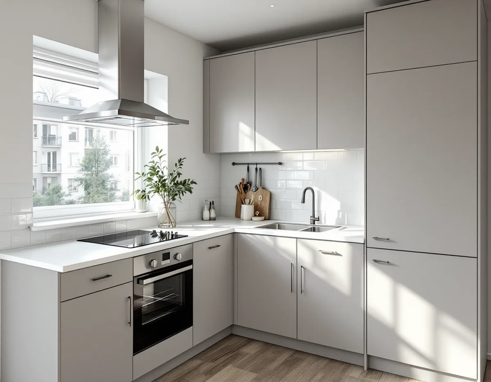
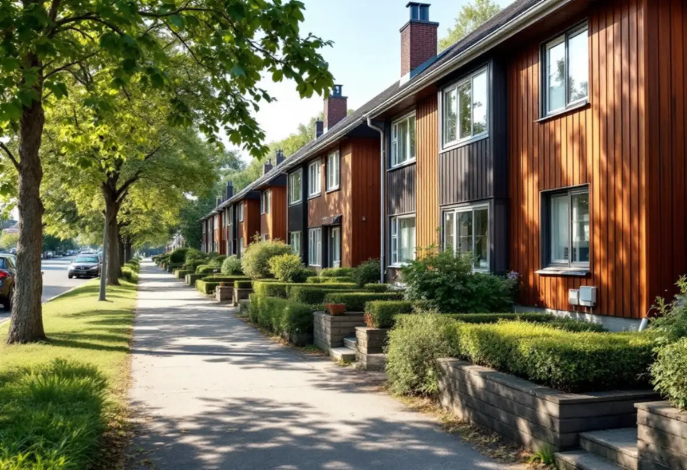

Platsbesök
Gratis besök där vi ser hur kök, kanal och ledningar är ordnade.
Skärholmen byggdes på 1960-talet, och många kök har samma planlösning som när husen var nya. Vem som får bygga om köket beror på om du hyr, äger en bostadsrätt eller har ett radhus. Geal Entreprenad AB reder ut vad som gäller och bygger köket färdigt.

Enligt Stockholmskällan började inflyttningen i det nya Skärholmen 1965, och Skärholmens centrum invigdes 1968. Stadens vägledning Varsam utveckling av småhus- och villaområden räknar Skärholmen, Bredäng, Sätra och Vårberg till de storskaliga stadsdelarna. Bredäng började byggas 1962 och följdes av Sätra, och industrialiseringen av byggtekniken fick sitt genombrott just då.
Det betyder att många kök i området är byggda med standardiserade mått och har ventilation och ledningar som är dragna på samma sätt i hela huset. Det kan göra det enklare att bygga ett nytt kök på samma plats – och svårare att flytta det. Vägledningen beskriver också hur gruppbyggda småhus och radhus utgjorde en stor del av miljonprogrammet, och hur andelen småhus ökade i början av 1970-talet. I de husen är köken ofta små och ligger mot entrén, och den vanligaste önskan är att öppna dem mot vardagsrummet.
Stadens områdesfakta för 2025 räknar i Skärholmens stadsdelsområde 3 479 lägenheter hos allmännyttan och 6 502 övriga hyresrätter i flerbostadshus, 3 315 bostadsrätter i flerbostadshus och 1 976 småhus med äganderätt. De flesta hushåll hyr alltså. Stockholms stad skriver att den som bor i hyresrätt normalt inte får flytta kök eller badrum – ett nytt kök i en hyreslägenhet beställs av hyresvärden.
I en bostadsrätt kräver bostadsrättslagen styrelsens tillstånd för ändring av ledningar för vatten och avlopp, för ändrad ventilation, för ingrepp i bärande konstruktion och för annan väsentlig förändring. I ett småhus med äganderätt är det du själv som ansvarar för att arbetet uppfyller kraven.
Stockholms stad skriver att ett kök ska ha tillräcklig frånluft och uppfylla kraven för imkanal. Ska en kanal användas för både kök och badrum måste dess mått räcka, och sotaren bör tillfrågas tidigt. I hus med gemensam mekanisk frånluft är det ofta föreningen som bestämmer vilken typ av köksfläkt som får sättas upp, så att flödena i huset inte rubbas.
En väsentlig ändring av ventilationen – till exempel en fläkt med egen motor som påverkar luftflödena, nya kanaler eller ett aggregat – kräver anmälan och startbesked. Att byta till en kolfilterfläkt eller en spiskåpa av samma typ som tidigare är normalt en enklare fråga, men det är föreningens regler som gäller. Staden påpekar också att arbetet ska uppfylla de tekniska egenskapskraven i plan- och bygglagen även när ingen anmälan krävs.
Vägledningen beskriver hur en stor del av miljonprogrammets bebyggelse var gruppbyggda småhus och radhus. I Sätra finns enligt områdesfakta 536 småhus med äganderätt och i Vårberg 577. I ett sådant hus kan köket ofta göras om friare, men en flytt som kräver nya rör i bjälklaget, ändrad ventilation eller en öppning i en bärande vägg kräver ändå anmälan till staden.
Vi ritar köket efter husets mått och ser till att el och VVS utförs av behöriga installatörer. Står badrummet också på tur beskriver vi det under badrumsrenovering i Skärholmen, och mer om kök i allmänhet finns under köksrenovering.

Gratis besök där vi ser hur kök, kanal och ledningar är ordnade.
Vi stämmer av vad föreningen eller hyresvärden tillåter.
Kök efter lägenhetens eller radhusets mått, med fläkt och vitvaror.
Styrelsens tillstånd och anmälan till staden där det krävs.
Rivning, el och VVS via behöriga installatörer, montering.
Genomgång av köket och dokumentation.
Skatteverket godkänner rotavdrag i en bostadsrätt för arbete inne i lägenheten som du själv ansvarar för enligt föreningens stadgar – till exempel att montera fast köksinredning och installera vitvaror i samband med en omfattande renovering, byta köksluckor eller riva innerväggar. Avdraget gäller arbetskostnaden, och Geal drar det direkt på fakturan.
Om köket stannar på samma plats, fläkt och ventilation, el och VVS, inredning och vitvaror och om en vägg öppnas. Efter ett gratis platsbesök får du ett skriftligt kostnadsförslag.
Planering, el, VVS, fläkt och väggar.
Köksrenovering i Stockholm →Takbyte, takbesiktning och plåtarbeten.
Takläggare i Skärholmen →Radhusen, källarplanet och golvbrunnen.
Badrumsrenovering i Skärholmen →Radhusen från 60- och 70-tal.
Fasadmålning i Skärholmen →Ny tapet i hyresrätt och bostadsrätt.
Tapetsering i Skärholmen →